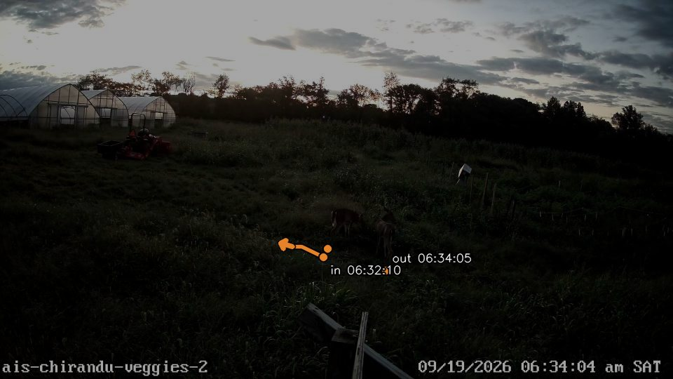
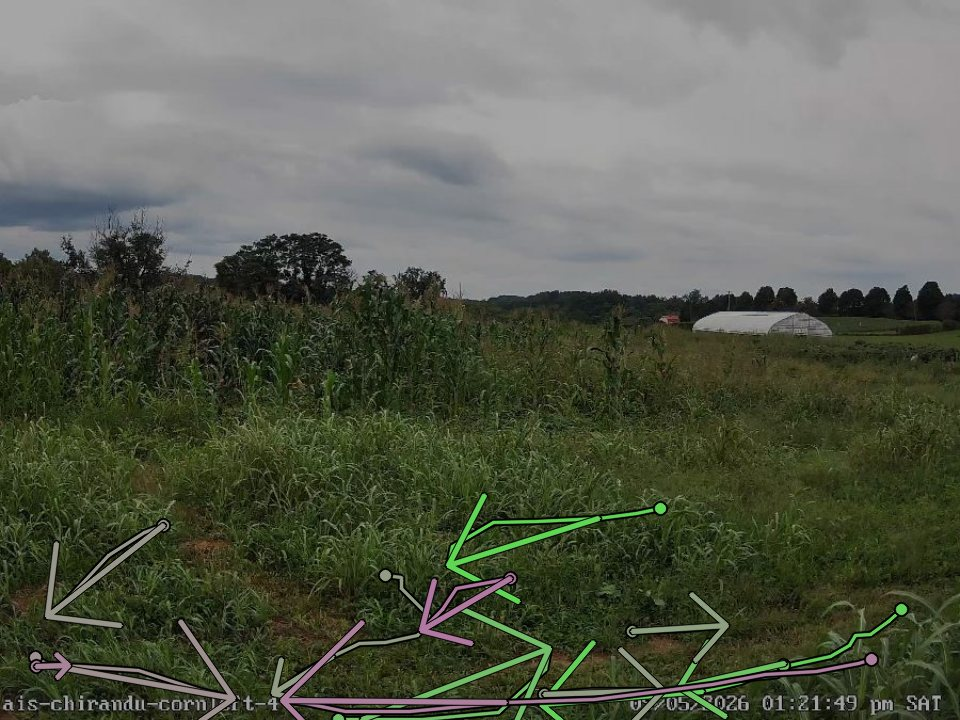
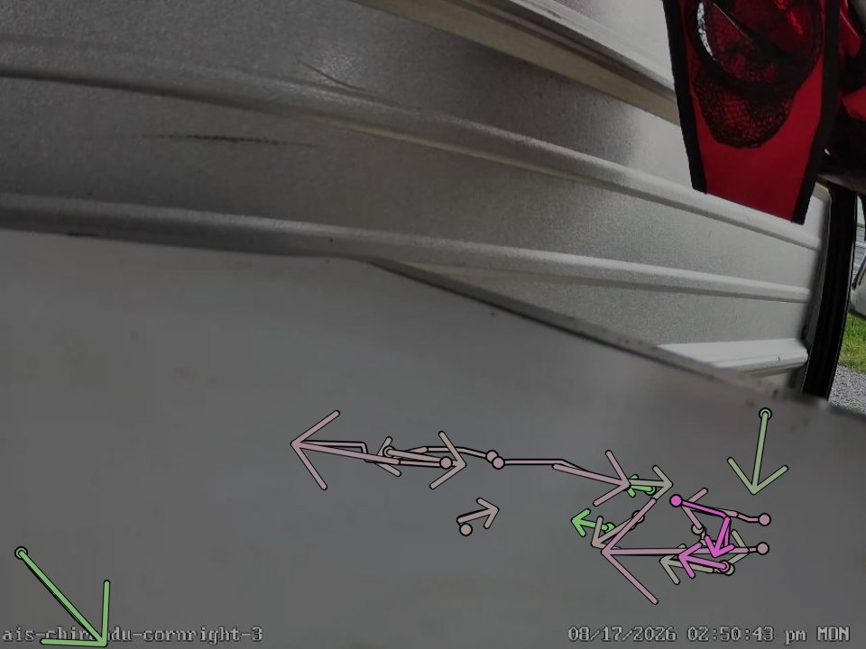
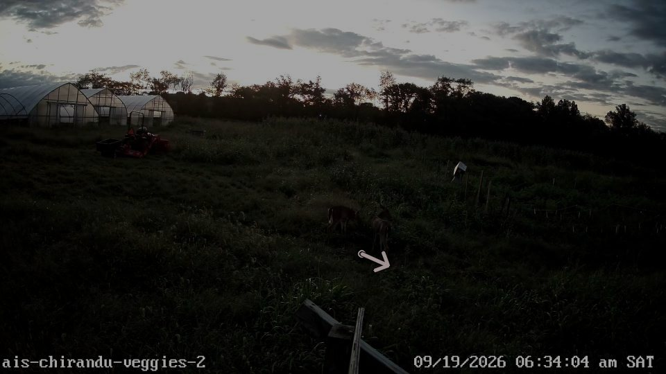

Each line follows one animal frame by frame at its feet: a dot where it steps into view, an arrow where it leaves. Things that don't move (the black pipe, insects stuck near the lens) are left out.
Saturday 19 Sep: two deer came into the vegetable field in front of the greenhouses at 6:32:10 am and were last seen at 6:34:05 am. The line follows the clearest deer in each frame.

Foxes were the regular visitor: 60 fox events on 21 nights between 18 Aug and 18 Sep. Each map shows every fox path on that camera, coloured by date.


